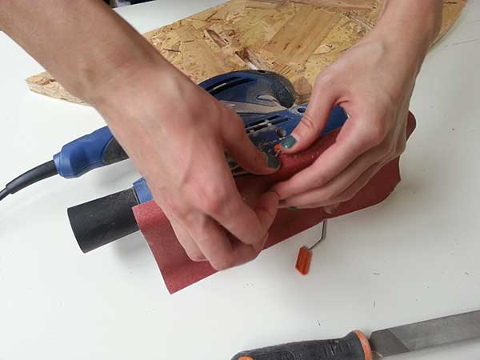

WEEK8
Make something big on the Enterprise CNC machine.
CLASS WEB PAGE:
For this assignment, each one of us had one OSB (Oriented Strand Board) to fabricate something big with the CNC Milling Machine. I decided to make something simple because at the same time, I'm trying to learn, day by day, to use Grasshopper. So I chose (like for the week 3) a waffle structure for my project but this time, instead to use Rhino to derive my sections I'll try to do the same process with Grasshopper. The idea for the project was to fabricate a furniture for the Frosinone Fab Lab. The OSB size were 2100x1100x19 mm so I had to think something big but not too much. Initially the idea was to make a library but I realized that the pieces needed to obtain the desired object were too big compared to the material that I had available. So I decided to project a furniture with the same number of pieces but smaller and use it in the Fab Lab to place objects and our realizations.
First phase: Modeling.
I started to work with Rhino/Grasshopper making a sphere. After I cut a part of it and I closed the other one I've worked on. With the countouring command I have divided the section into several parts obtaining horizontal and vertical sections. I made 2d the sections to draw easily the joints and at the last I exported a DXF file with the pieces to cut with the CNC.

Second phase: CNC machine.
I took the following steps to cut the pieces:
01 Import the DXF file in the Artcam software and I prepare it in order to have 2 layers (outsided pieces and holes to screwing the board to keep the table attached to the board while the machine is cutting).
02 Put the board in the machine's platform making sure that the surface is clean and smooth.
03 Set the machine ready. Find x,y and z.
04 Before start the machine rember to open air compressor.
05 Send the file to mark the holes.
06 Drill the screws on the board to fix it and make sure it doesn't move during the process.
07 Sent the file and wait for it to finish cutting. My file took more or less 1 hour to finish.
08 Remove the tabs using a chisel and a hammer.
09 Remove the pieces and the board.
10 Clean all from sawdust.

JOINTS REFERENCE:
http://makezine.com/2012/04/13/cnc-panel-joinery-notebook/A SHORT VIDEO OF MILLING PROCESS:
https://vimeo.com/123114594#at=6MATERIAL AND CNC DETAILS:
MATERIAL: OSB -oriented strand board (2100x1100x19 mm)MACHINE: Macchinecnc Enterprise
END MILLING TOOL: 6 mm
SOFTWARE: Artcam
Machine References:
http://www.macchinecnc.com/enterprise.html http://www.artcam.com/NOTE: As first time with this kind of machine I'm really satisfied of my work and my results! Fortunately I had no problems with the machine and I also enjoyed for this assignment! But with this kind of machine have to be careful considering all the dangers that can happen.